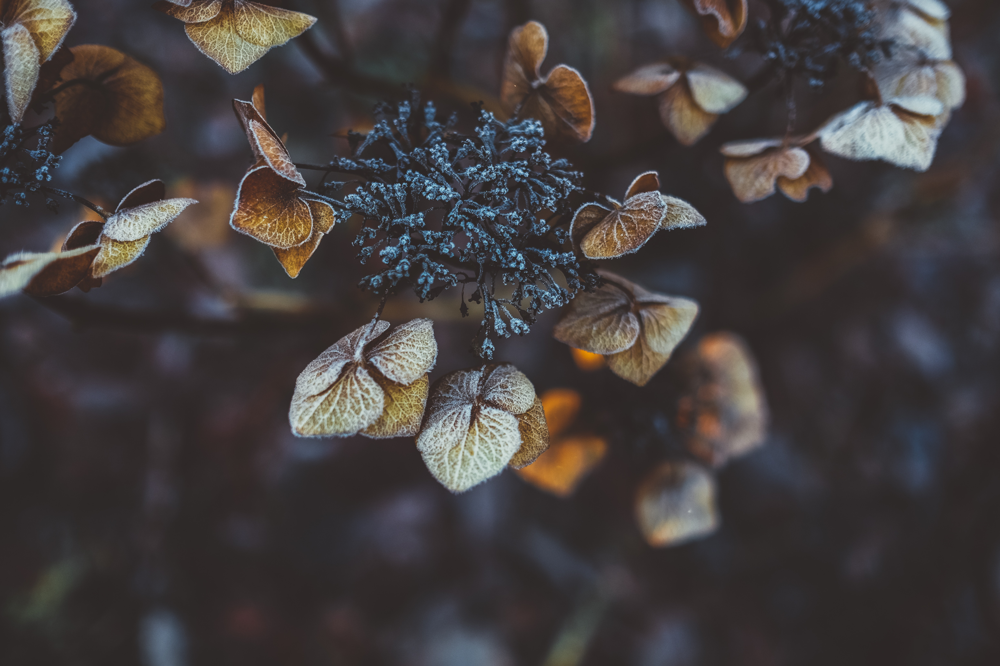

Le Pollen
Le pollen
Abeilles et fleurs
Etape finale
Menu

Vidéo explicative
Le rôle principal des abeilles est la pollinisation. Comme cette dernière est nécessaire à la reproduction des plantes, beaucoup d'entre elles dépendent des abeilles et d'autres insectes qui servent de pollinisateurs.
Départ de la ruche
De fleur en fleur